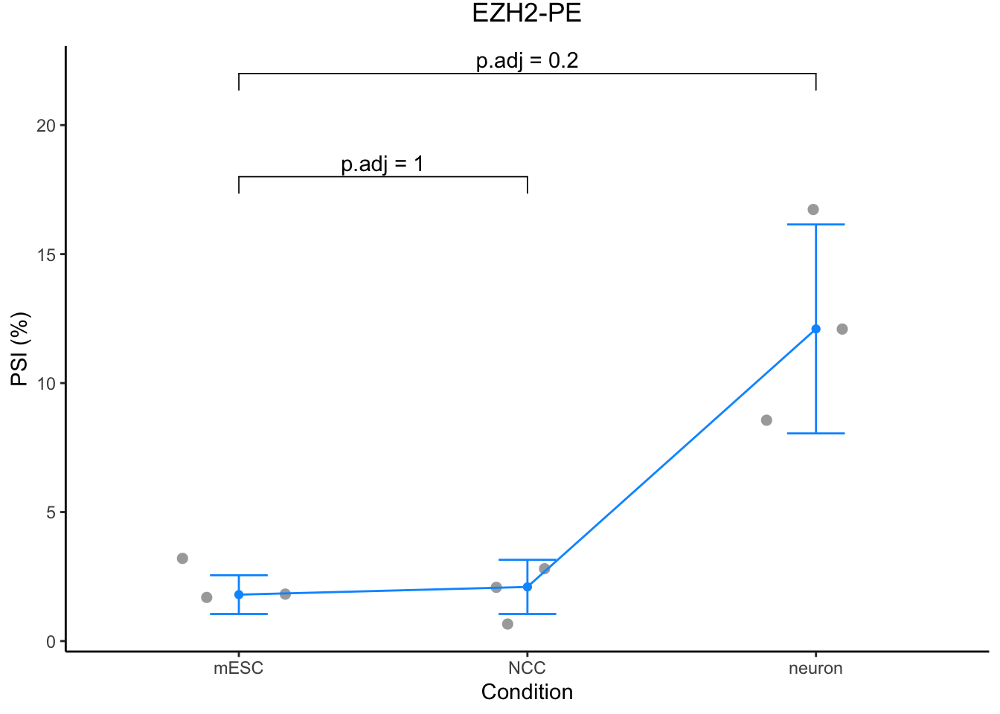
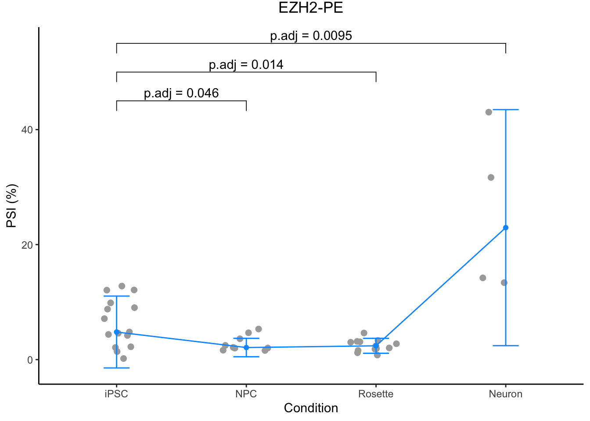

Coordinates
EZH2 Expression Across Development
Obtained from Cardoso-Moreira (2019) web-based application: http://evodevoapp. kaessmannlab.org.
Human

|
Mouse

|
Mouse Neuronal Differentiation

Figure 1. Plotted as median +/- interquartile range
Human iPSCs differentiated into neurons

Figure 2. Plotted as median ± interquartile range